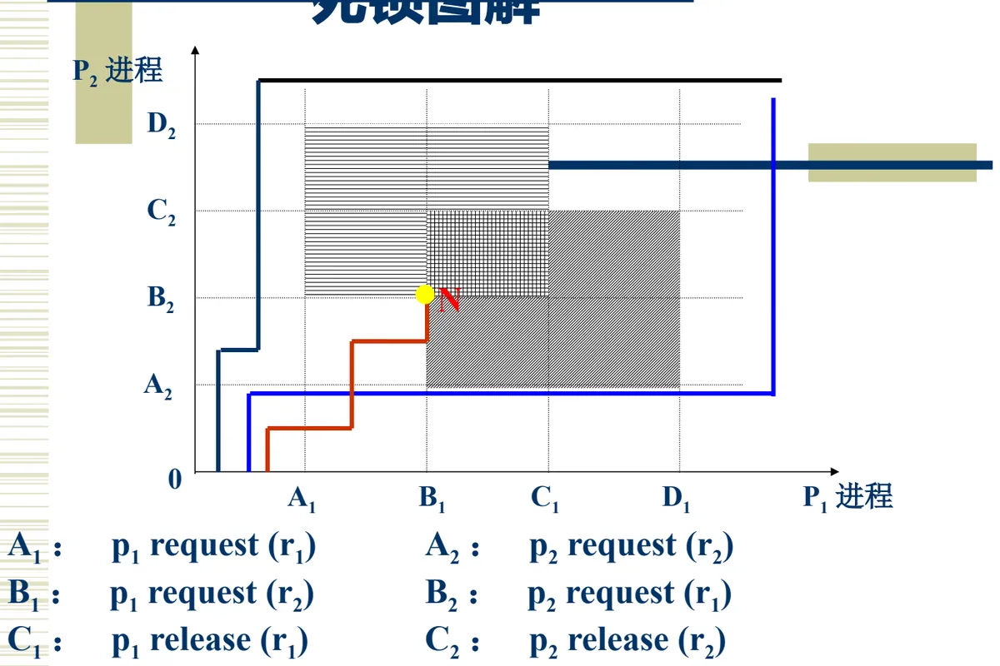
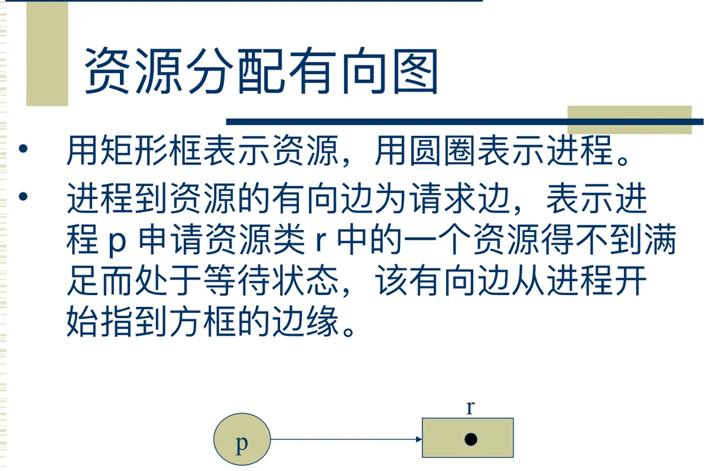
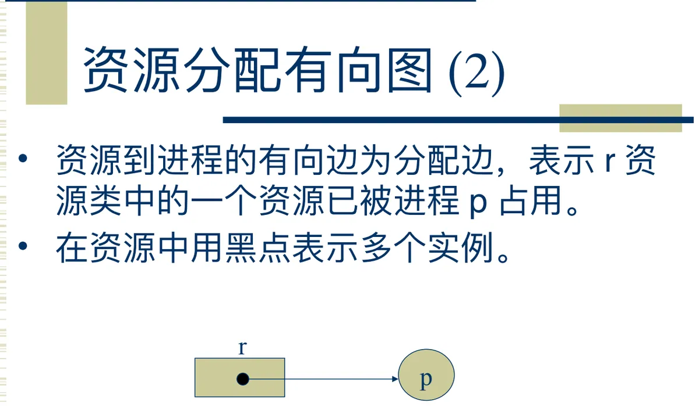
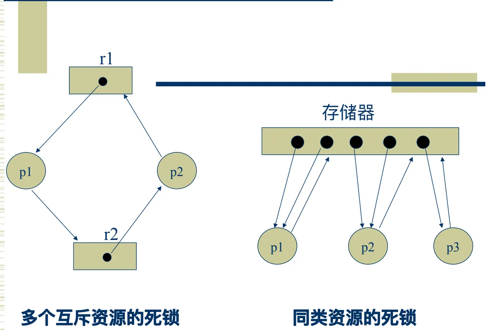

操作系统原理 · 第 5 章 资源分配与调度
5.3 死锁的概念与产生原因
第 4 章反复强调「资源必须互斥使用」，第 5 章开头又说明系统采用动态分配资源的策略。把这两件事放在一起，就会浮现一个危险：如果资源分配不当，进程之间可能互相等待、谁也不肯放手，全部被阻塞、无法推进。这就是死锁。这一节先看死锁是怎么发生的，再给出它的定义、产生原因、分析工具，最后归纳出产生死锁的四个必要条件——它是下一节讨论死锁预防的靶子。
1. 死锁是怎么发生的
操作系统的基本特征是并发和共享；共享的资源需要互斥访问；而资源的分配又是动态进行的。三件事合起来就意味着：进程会在运行过程中不断申请和释放资源，一旦分配不当，就可能出现「进程之间互相等待资源、全部都被阻塞不能推进」的局面。课件用两个例子说明这种局面是怎样形成的。
（1）多个互斥资源的共享
进程 p1、p2 共享一台打印机和一台光驱，两者都是互斥资源。时刻 t1：p1 占用了打印机，p2 占用了光驱；时刻 t2：p1 又请求占用光驱，p2 又请求占用打印机。此时 p1 手里的光驱要等 p2 释放，p2 手里的打印机要等 p1 释放，而双方都在等对方先放手——谁也推进不了。这是最典型的死锁：进程已经占有一部分资源，又在等待另一部分资源。
（2）同类资源的共享
再看一类资源的例子：进程 p1、p2 共享一个容量为 5 的缓冲区。时刻 t1：p1 占用 3 个缓冲区，p2 占用 2 个缓冲区；时刻 t2：p1 又请求 1 个缓冲区，p2 又请求 1 个缓冲区。缓冲区已经一个不剩，两个请求都无法满足，而它们占用的缓冲区又要等到自己做完才释放——同样全部被阻塞。可见死锁并不要求资源种类不同，同类资源被逐步瓜分干净也会造成死锁。
（3）生产者—消费者问题中的次序问题
第 4 章的生产者—消费者问题里也埋着同样的隐患。下面把生产者的两个 P 操作次序颠倒过来（原课件特意注明「这两个语句颠倒」）：
produceri( )
{ while(生产未完成) {
生产一个产品;
p(mutex); /* 这两个语句 */
p(empty); /* 颠倒 */
送一个产品到有界缓冲;
v(mutex);
v(full);
}
}
consumerj( )
{ while(还要继续消费) {
p(full);
p(mutex);
从有界缓冲区中取产品;
v(mutex);
v(empty);
消费一个产品;
}
}颠倒之后，生产者可能先拿到 mutex（缓冲区使用权），再去等一个空位置 empty；如果此刻缓冲区已满，它就只能抱着 mutex 等待。而消费者要取走产品、腾出空位置，恰恰需要先拿到 mutex——双方互相等待，系统死锁。这就印证了 4.6 节末尾的提醒：P 操作的次序不能随意交换。
2. 死锁的概念与特点
把上面的现象概括成定义：在两个或多个并发进程中，如果每个进程持有某种资源而又都等待着别的进程释放资源，它们都不能向前推进，此时称这一组进程产生了死锁。换一种说法，死锁是两个或多个进程被无限期阻塞、相互等待的一种状态，每个进程都占用了一定的资源而又都不能向前推进。
死锁有几个特点值得单独记住：
- 死锁是由于资源分配不当引起的，不是资源本身有多少的问题；
- 死锁是百害而无一益的，它只会让系统停摆；
- 死锁不是必现的，它和时间有关，也就是与各进程申请、释放资源的具体时机有关。
（1）死锁与竞争的关系
既然死锁是竞争引起的，那能不能干脆取消竞争？不能。资源竞争本身是具有活力的、是需要的，虽然它存在着发生死锁的危险性。竞争是多个进程对共享资源的争夺，正是它使得多进程能够并发执行；死锁只是资源争夺过程中由于分配不当而造成的一种极端现象——永远互相等待。因此正确的态度是：操作系统应该采用有效的、安全的资源分配方法，来预防、避免或检测解除死锁，而不是取消竞争。后面几节讲的预防、避免、检测与解除，都是在这个前提下展开的。
3. 产生死锁的原因
死锁的产生与三个方面的因素有关：
- 系统资源不足：资源数量不能满足所有进程的需要——注意这里的前提是「足够满足任一进程单独运行完」，也就是说每个进程单独跑都能跑完，只是同时跑就紧张了；
- 进程占用和释放资源的顺序：如前面的生产者—消费者问题，P 操作次序不同，结果完全不同；
- 进程的运行推进顺序：多个进程推进的相对快慢会改变资源的分配结果，所以死锁与时间有关、不是必现。
分析死锁常用的工具有三个：死锁图解、资源分配有向图和系统资源模型。下面依次看前两个。
4. 用信号灯分析资源的占用序列
课件设置了一个可以动手分析的场景：进程 p1 与 p2 共享一台打印机 R1 和一台光驱 R2，用信号灯的 P、V 操作表示资源的申请和释放，s1 表示 R1 可用、s2 表示 R2 可用，初值都为 1。现在讨论四种资源占用序列，看哪种情况可能产生死锁。
序列 1（申请即释放、次序相同）：
进程 p1
A1: p(s1); 占用 R1
B1: v(s1);
C1: p(s2); 占用 R2
D1: v(s2);
进程 p2
A2: p(s1); 占用 R1
B2: v(s1);
C2: p(s2); 占用 R2
D2: v(s2);两个进程「申请一个、用一个、马上还一个」，任何时刻最多只持有一个资源，不满足「占有并等待」，因此不会死锁。
序列 2（申请即释放、次序相反）：
进程 p1
A1: p(s1); 占用 R1
B1: v(s1);
C1: p(s2); 占用 R2
D1: v(s2);
进程 p2
A2: p(s2); 占用 R2
B2: v(s2);
C2: p(s1); 占用 R1
D2: v(s1);p2 的申请次序与 p1 相反，但同样是用完即释放、不保持占有，所以仍然不会死锁。这说明「申请次序相反」本身还不足以致死锁，关键还要看是否「持有并等待」。
序列 3（保持占有、次序相同）：
进程 p1
A1: p(s1); 占用 R1
B1: p(s2); 又占用 R2
C1: v(s1);
D1: v(s2);
进程 p2
A2: p(s1); 占用 R1
B2: p(s2); 又占用 R2
C2: v(s1);
D2: v(s2);两个进程都是先占到 R1、再在持有 R1 的情况下申请 R2，即满足「占有并等待」；但它们的申请次序完全相同（都是 R1 → R2），不会形成「你等我、我等你」的环路，因此也不会死锁。
序列 4（保持占有、次序相反）：
进程 p1
A1: p(s1); 占用 R1
B1: p(s2); 又占用 R2
C1: v(s1);
D1: v(s2);
进程 p2
A2: p(s2); 占用 R2
B2: p(s1); 又占用 R1
C2: v(s2);
D2: v(s1);这一种可能产生死锁：两个进程都满足「占有并等待」，且申请次序相反。只要 p1 先拿到 R1、p2 先拿到 R2，接下来 p1 要的 R2 在 p2 手里，p2 要的 R1 在 p1 手里，就形成了环路等待。
把这四种序列排在一起看，结论很清楚：死锁的发生既不取决于资源是否同类，也不仅仅取决于申请次序是否相反，而是几件条件同时成立的结果——这正是下一部分要提炼的「必要条件」。
5. 死锁图解
死锁图解用两个进程各自的推进过程作为两条坐标轴：一个进程轴上依次标出它的资源申请与释放动作，另一个进程轴同理，两条轴上的动作把平面划分成若干区域，落在特定区域内的推进组合就意味着两个进程都处在「已经占有一部分资源、又在等待另一部分」的状态，系统进入死锁。课件给出的这组动作是：
A1：p1 request (r1) A2：p2 request (r2)
B1：p1 request (r2) B2：p2 request (r1)
C1：p1 release (r1) C2：p2 release (r2)
D1：p1 release (r2) D2：p2 release (r1)
6. 资源分配有向图
更规范的分析工具是资源分配有向图。它的节点集合由两部分组成：
资源集合：R = { r1, r2, ..., rm }
进程集合：P = { p1, p2, ..., pn }画法上，用矩形框表示资源，用圆圈表示进程。边集合 E 有两类：
- 请求边 p → r：进程已请求资源、正在等待。这条有向边表示进程 p 申请资源类 r 中的一个资源得不到满足而处于等待状态，边从进程开始指向方框的边缘；
- 分配边 r → p：资源已分配给进程。这条有向边表示 r 资源类中的一个资源已被进程 p 占用。如果一类资源有多个实例，就在矩形框中用黑点表示多个实例。


有了这张图，前两节的例子就可以画成图 4 那样的两种典型形态：多个互斥资源的死锁（进程各自占有一个资源，又分别请求对方手里的资源，构成环）与同类资源的死锁。

（1）环与死锁的关系
课件给出了一个具体例子：
P = { p1, p2, p3 }
R = { r1, r2, r3, r4 }
E = { p1 → r1, p2 → r2, r1 → p2,
r2 → p3, r3 → p1, r3 → p2 }资源类型 r1 有 1 个实例，r2 有 1 个实例，r3 有 2 个实例，r4 有 3 个实例。由此可以判断：如果每种资源只有一个实例，有环是发生死锁的充分必要条件；而如果存在某种资源有多个实例，有环只是发生死锁的必要条件——有环不一定死锁，还要看实例够不够分。这个结论在 5.6 节讲死锁检测时会直接用到。
（2）同类资源的死锁问题
课件用两道练习结束这一部分，它们讨论的都是同类资源下死锁会不会发生：
- 三个进程共享四个同类资源，资源的分配和释放只能一次一个，已知每个进程最多需要两个资源，问该系统会不会发生死锁，为什么；
- p 个进程共享 m 个同类资源，a 为所有进程对该类资源的最大需求数目之和，证明：如果 a < p + m，则不会发生死锁（前提是单独每个进程对该类资源的最大需求量不超过 m）。
第二题给出的判据很有用：它把「会不会死锁」转化成了一个关于资源总数的数量条件，而不需要去分析每个进程的推进时序。
7. 产生死锁的条件
把前面的分析提炼出来，产生死锁必须同时满足四个条件，缺一不可，因此它们也叫做死锁的必要条件：
- （1）互斥条件：涉及的资源是非共享的，即一次只有一个进程使用。如果有另一个进程申请该资源，那么它必须等待，直到该资源被释放；
- （2）不可抢占：进程所获得的资源在未使用完毕之前，不能被其他进程强行夺走，即只能由获得该资源的进程自己主动释放；
- （3）占有并等待（部分分配）：进程每次申请它所需要的一部分资源，在等待一个新资源的同时，进程继续占用已分配到的资源；
- （4）环路条件（循环等待）：存在一种进程的循环链，链中的每一个进程已获得的资源同时被链中下一个进程所请求。
对照第 4 部分分析的四种序列，可以看到序列 4 之所以会死锁，正是因为它同时满足了这四条：R1、R2 是互斥资源；进程拿到资源后不会被人抢走；两个进程都占有并等待；两个进程之间构成了环路。而序列 1、2 破坏了第三条，序列 3 破坏了第四条。下一节死锁的预防，思路就是想办法破坏其中的某一条。
本节小结
- 死锁是「每个进程持有某种资源又都在等待别的进程释放资源，谁都不能向前推进」的状态，其特点是由资源分配不当引起、有百害而无一益、不是必现且与时间有关；
- 死锁来自竞争，但竞争本身是并发活力所在，不能取消；要取消的是不安全的分配——正确的做法是用安全有效的资源分配方法去预防、避免或检测解除死锁；
- 产生死锁的原因有三：系统资源不足（但足够任一进程单独运行完）、进程占用释放资源的顺序、进程的运行推进顺序；常用分析工具有死锁图解、资源分配有向图、系统资源模型；
- 资源分配有向图中，圆圈是进程、矩形是资源，p → r 是请求边、r → p 是分配边，黑点表示多个实例。每种资源只有一个实例时，有环是死锁的充要条件；有资源存在多个实例时，有环只是必要条件；
- 产生死锁的四个必要条件：互斥、不可抢占、占有并等待、环路条件；生产者—消费者问题中颠倒两个 P 操作、以及信号灯序列 4 那种「保持占有 + 次序相反」，都是四条件同时成立的例子。